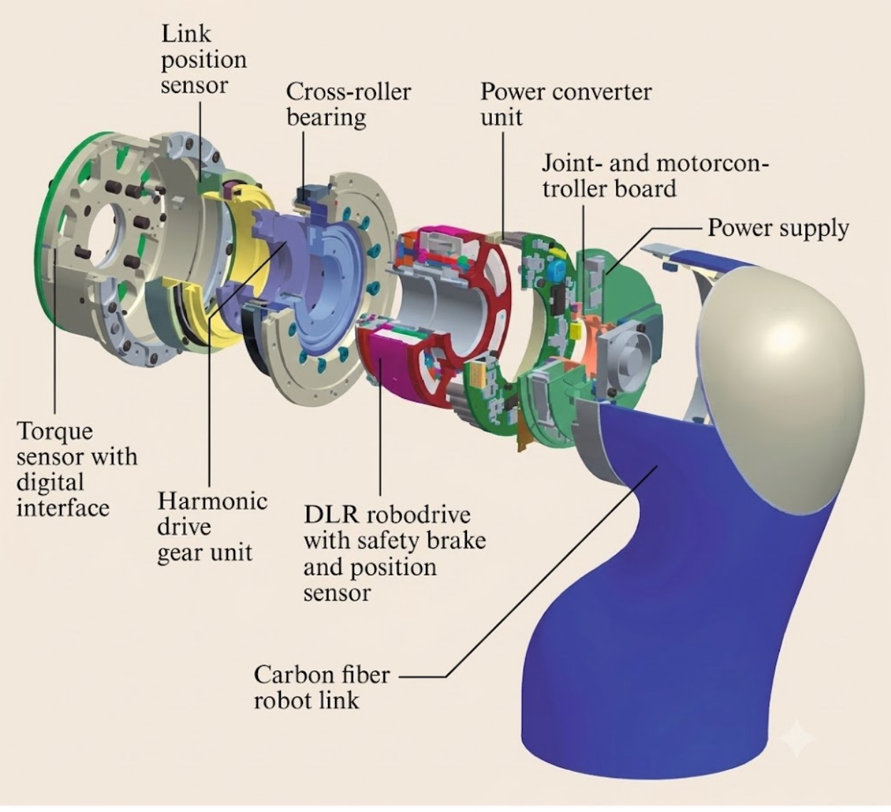
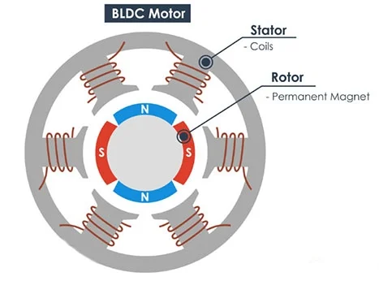
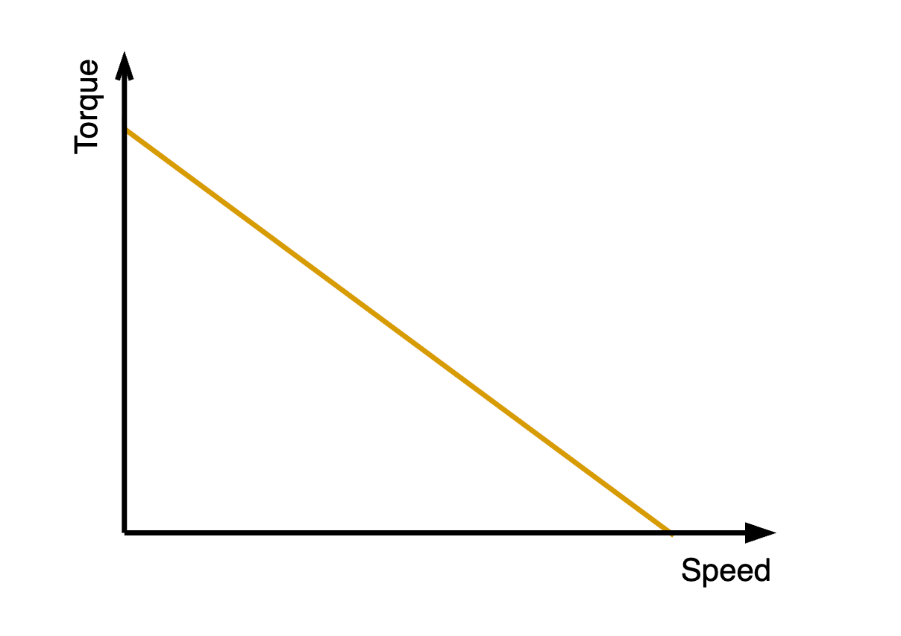
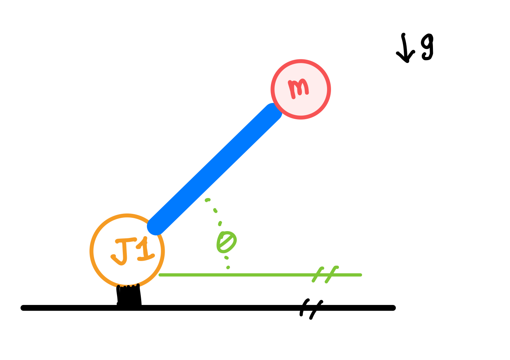
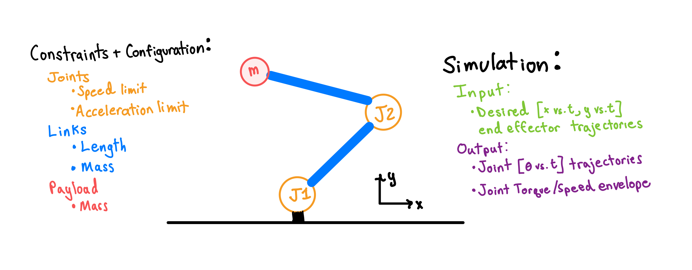
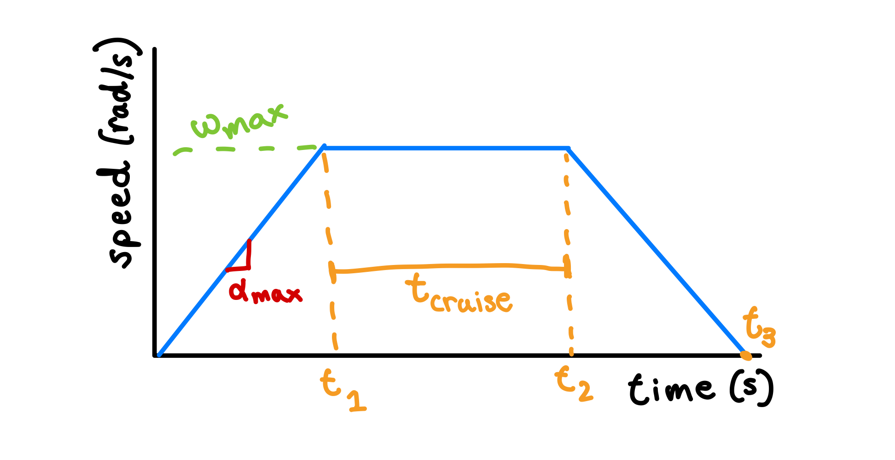
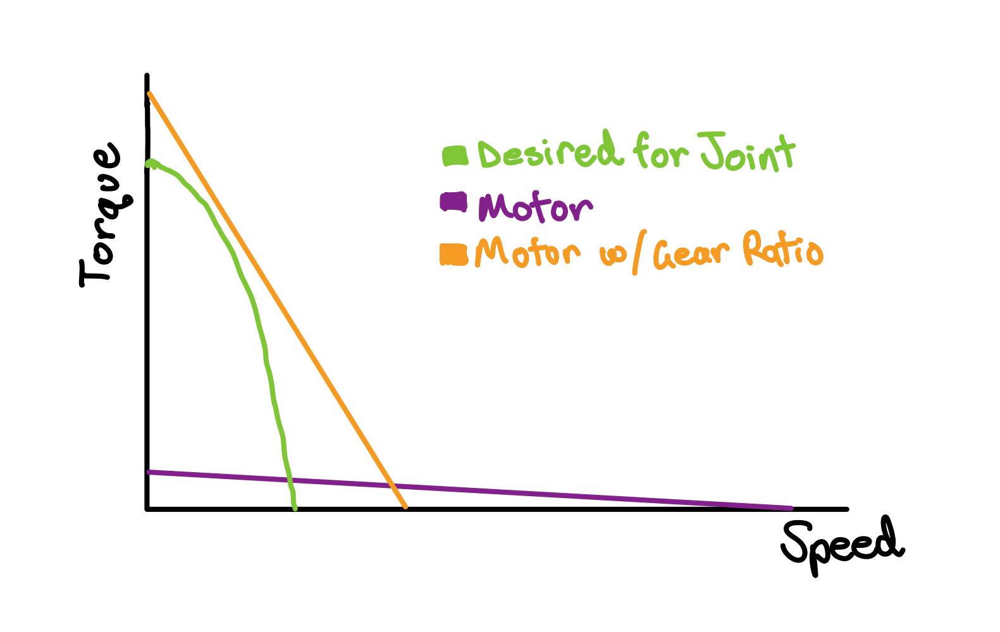
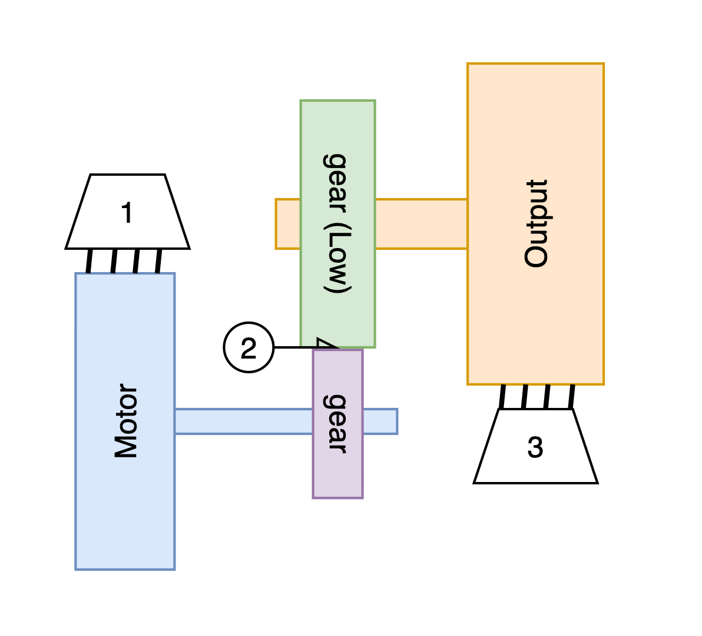
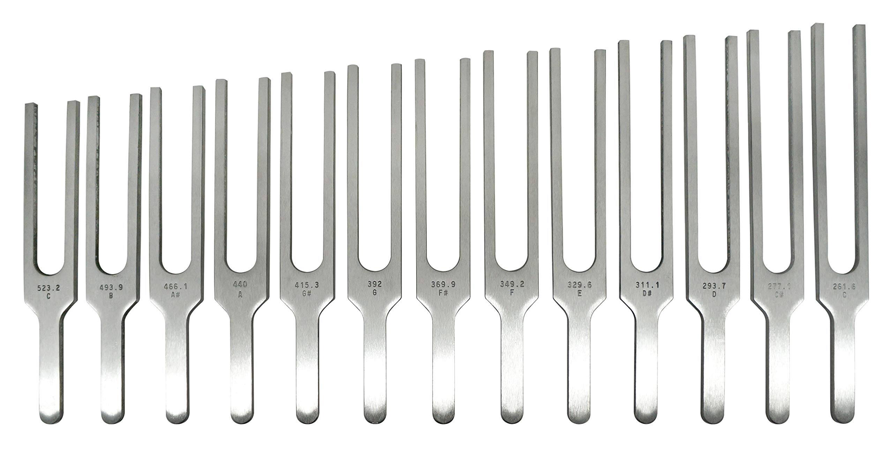

Actuator Design Primer
Actuators are getting recognition as the critical component of robotics hardware today, and while there are great resources covering what they are and what they are made of (see humanityslastmachine.com), something that is both difficult to learn and explain is how engineers design actuators for specific applications.

My hope is that you can walk away from this post with a foundational understanding of the workflow of how actuator requirements are developed and how different physical properties (length of a robot limb, stiffness of the gearbox) affect the performance characteristics that roboticists actually care about. In future posts, I aim to answer deeper questions down to "how is battery voltage controlled by a microcontroller to make a 3-phase motor spin?"
Note: There are tons of different types of actuators. This post most centrally covers the BLDC electric motor actuators you would find in modern robot arms and humanoids, but most concepts can be abstracted to other types. I won't cover some of the more obvious metrics like backlash and will instead focus on ones that are more technically nuanced
Many define an actuator by what it is most commonly made of: a motor, gearbox, sensors (position encoders and sometimes torque sensors), a controller, and supporting mechanical hardware (bearings, etc.). The broader, better definition is what an actuator does: converts stored energy into controlled mechanical power.
In robots, motors convert electrical power into mechanical power. To begin exploring actuator design and optimization, one must first understand the basics of motors.
Motor Basics
Recall these two electromagnetism concepts from high school physics (if they don't ring a bell see useful links at bottom):
- A coil of wire carrying current generates a magnetic field
- Magnetic flux and the electromotive force
Concept 1
When a voltage source is connected to a wire, it creates a continuous current in the wire $I = \frac{V_{source}}{R_{wire}}$ where the wire resistance $R_{wire}$ is determined by physical properties like wire material and diameter. A magnetic field is created around the wire. When you arrange the wire in the shape of a coil (sometimes called a solenoid), it creates a uniform magnetic field through the center of the coil. When interacting with another magnetic field, a force is produced.
In this environment you can see a simplified model of how the force vector on a permanent magnet changes as the magnet approaches the axis of the coil. A brushless motor is this arrangement copy-pasted and wrapped around a circumference into a cylindrical motor.

The tangential force acts at the radius of the motor producing a torque ($\tau = F \times r$). The force is directly proportional to magnetic field strength which is directly proportional to current. Thus, $\tau_{max} \propto I_{max}$ or $\tau_{max} = K_{T}I_{max}$ where $K_{T}$ is the motor torque constant (dependent on geometry and other physical properties).
You may have noticed that as the magnet crosses the coil, the tangential force direction flips. If this were true in motors, they wouldn't spin. Motor controllers actively change the amount and direction of current in coils to produce changing magnetic fields for efficient torque generation. If curious, search up Field Oriented Control
Concept 2
From the lens of energy, we are converting electrical energy from flowing electrons into mechanical kinetic energy. Power is the measure of energy over time and in these two forms can be simply represented:
where $V$ is voltage, $I$ current, $\tau$ torque, and $\omega$ speed. We know energy can't be created for free, so you may be thinking at this point that there is a direct tradeoff between torque and speed because the maximum mechanical power is fixed. And you'd be right in the assumption of this relationship — but for the wrong reasons.
A current flowing through a wire creates a magnetic field. The opposite is also true. Faraday's law tells us that a changing magnetic flux (magnetic field integrated over an area) creates what is called an electromotive force.
As the magnets on the rotor of a motor pass by the stator coils, they produce a changing flux. $EMF$ is a measure of voltage, and its polarity is opposite to the one producing current in the coils. This means the productive voltage is reduced by the EMF: $V_{motor} = V_{supply} - V_{EMF}$. Changing flux is directly proportional to the motor speed $\omega$, thus $V_{EMF} = K_{B} \cdot \omega$ where $K_{B}$ is some constant.
Moving and substituting terms, we get the steady state DC motor equation:
Steady state means the motor is operating at a constant speed. As the motor accelerates, inductance in the motor circuit and inertia in the rotating components absorb energy. The supply voltage and wire resistance are fixed, yielding a direct linear trade-off between torque and speed.
Note: Fundamentally, $K_{T} = K_{B}$, so this can be further simplified
This is the heart of what describes the performance capability of any motor: its torque-speed envelope. Motor design is highly complex, but at the end of the day this is the main plot engineers are using to synthesize what a motor is capable of.

Now that you have a grasp on motors, let's jump back to how you develop requirements for an actuator and fit a motor to them.
Actuator Design — Where to Start?
Due to the lack of quality and inexpensive commodity actuator hardware, the design approach for roboticists has been design the actuator around the robot, not the robot around the actuator. Robot design is influenced by a wide variety of stakeholders and must satisfy functional and aesthetic requirements. For the sake of actuators, any robot design can be described by three questions:
- How many joints are there and how are they spatially arranged?
- How much torque must each joint generate?
- What trajectory (speed, acceleration) must the joint follow?
The first question is answered by determining what tasks the robot must complete (manipulating small objects, moving crates, walking, etc.) The latter two questions require engineering approaches to answer.
Note on Trajectories
A common mistake I see many robotics enthusiasts make when exploring their first robot arm project and trying to figure out how much torque each joint needs is only considering statics and ignoring dynamics. Here's what that means:
When you have a motor connected to a beam at the end of which is some weight, it is simple to calculate the torque required to hold that beam up against gravity: $\tau_{gravity} = mg \cdot r \cdot \cos(\theta)$

When considering that the arm must move, things become more complicated. Now you must include the torque contribution from accelerating the arm as it begins to move $\tau = \tau_{gravity} + \tau_{motion}$, where $\tau_{motion} = m \cdot r^{2} \cdot \alpha$. But what is the acceleration $\alpha$ value? To determine that, you must compute a trajectory.
A trajectory defines the path a robot will take to get from its current state to a target state, and is solved as an optimization problem. Later in this post you will explore a common trajectory: trapezoidal velocity profiles that are subject to maximum velocity and acceleration constraints.
Generating Torque/Speed Envelopes

Modern roboticists use simulation environments (Drake, MuJoCo, Isaac Sim, Matlab) to compute joint/torque envelopes for actuators (see Tesla AI Day 2022 where Konstantinos talks about this process for early Optimus). They input a kinematic chain (description of arrangement of joints), physical properties of the links connecting joints, and a desired end effector profile. The simulator computes joint position trajectories (using inverse kinematics) alongside torque, resulting in a plot of combinations of torque and speed operating points.
The setup and onboarding for these simulation packages is non-trivial, so to help you visualize what they do I built a simple playground in which you can vary configurations and simulate a 1DOF robot traveling 180 degrees.
Use 'save config' to keep a profile in the background and overlay new ones over it
How does this work in the background? Here's all the math
Computing Trajectory
The simulator first computes the trapezoidal velocity trajectory. The known constraints are:
- Total travel distance $\theta = \pi$
- Maximum radial velocity $\omega_{max}$
- Maximum radial acceleration $\alpha_{max}$
The minimum time trajectory will be the one that operates at the constraints, or as close to them as possible to travel a certain distance. The solver will first check if it can reach the maximum velocity given the acceleration constraint:
In Case A the trajectory is split into three phases:
- Accelerate — $t_{1} = \frac{\omega_{max}}{\alpha_{max}}$, $\theta_{1} = \frac{\omega_{max}^2}{2\alpha_{max}}$
- Cruise — $\theta_{2} = \theta - 2\theta_{1}$, $t_{cruise} = \frac{\theta_{2}}{\omega_{max}}$, $t_{2} = t_{1} + t_{cruise}$
- Decelerate — $t_{3} = t_{1} + t_{2}$
The total time is then $T = 2 t_{1} + t_{cruise} = \frac{2\omega_{max}}{\alpha_{max}} + \frac{\theta - \omega_{max}^2/\alpha_{max}}{\omega_{max}}$

Case B is much simpler since $\omega_{max}$ is never reached. The peak angular velocity is $\omega_{peak} = \sqrt{\theta \cdot \alpha_{max}}$ and the ramp up time is computed as $t_{1} = \sqrt{\frac{\theta}{\alpha_{max}}}$. The ramp down is the exact same as ramp up making the total time $T = 2t_{1}$.
Computing Inertia
To compute torque, the next component required is inertia. The two contributing members to rotational inertia are the payload and that of the link. If we assume the link is a rod with evenly distributed mass and a linear density of $\rho = 5 \text{ kg/m}$, from a lookup table we can compute the inertia to be $J_{rod} = \frac{ML^2}{3} = \frac{\rho L^3}{3}$. The payload is simply a point mass, thus the total inertia is:
Computing Torque
With the trajectory and inertia, we now have all the components needed to compute the actuator torque during the trajectory. The three components contributing to torque are gravity on the link, gravity on the payload, and inertial torque from accelerating the system.
Gears
With a defined torque-speed profile for a joint, the next step is just to find a motor that fits what we desire on top of other system requirements. Simple, right? Nope.
Electric motors are generally designed to spin fast at low torque due to their geometric scaling laws and thermal generation. Finding an off-the-shelf motor that can reasonably fit your joint profile is near impossible, which makes way for another well-known component of actuators: gears.
Gearboxes have a straightforward effect on the torque-speed curve. They linearly multiply torque and divide speed, changing the effective slope of the curve.

While it seems like this could solve all actuator torque problems, there is unfortunately no such thing as a free lunch. Gears and the components required to support them increase mass (and thus rotational inertia) and produce two significant negative effects for actuators:
- Friction/Efficiency losses
- Reduced bandwidth
Friction+Efficiency Losses
"Losses" are anything that reduce the effective torque-speed envelope. There are three primary loss mechanisms:
- Load dependent. The amount of loss depends on the amount of torque applied. For example, friction in the mesh between gears
- Velocity dependent. Loss via dynamic friction torque depends on operating speed
- Constant/drag. A loss in torque regardless of operating point
In reality, most physical components produce losses as a function of all. Take a cross roller bearing, for example, which is found in most actuators. Based on the lubricant and nominal internal clearance, it may have a constant loss at low speeds but then see an increase at higher speeds. Axial, radial, or moment loads may produce additional frictional losses. For the sake of design however, it is best to reduce it to a linear model and fit to one of the three.
Losses can also live in the direct load path of the actuator or be to the side. This is the differentiation between a "series" and "parallel" path, similar to circuits or springs. Let's take a look at a basic diagram of an actuator to understand this.

The basic model has three components: a fast spinning motor (called the high speed drive), a geartrain, and the output (low speed side). The gears live directly in the path between the input (motor) and the output, meaning loss here is in series (see #2). The motor and output are supported by bearings and have other mechanical components that create friction, but are not in the transmission path from input to output. Thus, these are in parallel (#1 and #3).
Let's look at how each of these three losses impact the torque-speed envelope. Step through below to see how each loss stage reduces the usable envelope:
Visually, you can see that constant drag torques cause a vertical shift in the torque-speed profile while load-dependent losses create a slope change. This is a critical step in actuator engineering prior to committing to a design as the available envelope can at times shrink by more than half depending on which components are selected for transmitting power.
Reduced Bandwidth
An often overlooked, super important characteristic of actuators is their control bandwidth. Bandwidth is the frequency range over which a system can actually respond to its input. I remember I had no idea what that meant when I first learned of the concept, so here it is broken down:
Every physical system has a stiffness and an inertia. These create a natural frequency, which is sometimes known as a resonant frequency. Take a musical tuning fork for example. Why is it that when you strike it, no matter against what object, it makes the same pitch sound? Striking the fork is an excitement — energy into the system. Based on the geometry and material of the fork, it has a characteristic natural frequency which corresponds to a sound of specific pitch. Vary the dimensions → vary the stiffness/inertia → vary the pitch.

Reflected Inertia
The 1DOF robot simulator provided a way to calculate inertia for the output link and payload, but one component it missed is the inertia of the actuator itself that connects to the link. Inside the actuator is a high speed spinning motor, which largely contributes to the system.
Since the motor lives past the gear stage relative to the output, its rotational speed is multiplied by the gearbox ratio. In modern humanoids, this can range anywhere from 10:1 to 100:1. Let's look at basic energy equations to arrive at the scaling law for what the increased inertia contribution is.
The kinetic energy of a rotating system from simple mechanics is $KE = \frac{1}{2}J\omega^2$, where $J$ is the rotational inertia and $\omega$ is the angular velocity. When we apply a gear ratio $N$ to $\omega$, this becomes $KE = \frac{1}{2}J(\omega \cdot N)^2 = \frac{1}{2}JN^2\omega^2$. The effective inertia (or reflected inertia) of the motor is:
So although the rotor of the motor is much smaller and less massive than the link and payload, in an actuator with a 50:1 or 80:1 gear ratio (common for humanoids), the inertia is multiplied by three orders of magnitude and can significantly increase the inertia of the system.
In an actuator, the gearbox tends to be the least stiff part of the system, and the rotor and link+payload are the largest contributors to inertia. Assuming second order system dynamics, the natural frequency can be simply calculated as $\omega_{n} = \sqrt{\frac{K}{J}}$. This is best visualized with a bode plot which shows the gain dropoff and phase delay in frequency domain. See how those work in this playground:
Sweep across drive frequency to see how system response changes
Frequency domain analysis of actuators and controllers can become complex and is something we will explore more later. For now, know that reflected inertia scales with gear ratio², and that a higher inertia dramatically reduces the ability to track a signal accurately.
More Topics
This post just scratches the surface of actuator design. There are tons of optimization frameworks and solutions to strange problems in topics like motor control that significantly impact actuator performance. Some future topics:
- Inertia matching for optimal gear ratios
- How motors are controlled (FOC)
- Torque transparency (why torque sensors are sometimes required)
- How do simulators work to compute joint torques and speeds for various kinematic chains with known mass and payload properties
- What motor design parameters determine the torque-speed capability
- Motor efficiency map and favorable operating conditions